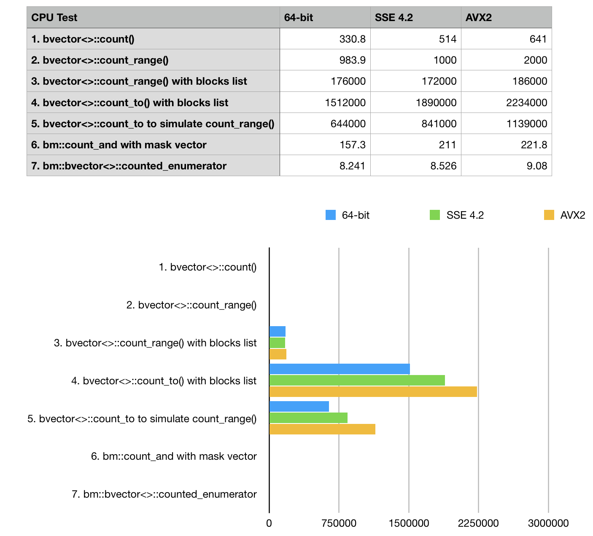

Population counting, Rank-Select and prefix sum operations in BitMagic Library
Anatoliy Kuznetsov. Jan, 2018. anatoliy_kuznetsov@yahoo.com
Introduction
Population counting (or bit counting) is common operation with applications in database, information retrieval systems, as a building block for address space flattening, I/O indexing, etc. BitMagic library provides set of tools and functions to help with this operations. This mini-artcile reviews reviews a set of methods used for population counting. Quick review of various methods, applicability and SIMD optimizations potential (SSE 4.2 and AVX2) to help BitMagic Library users choose the best method for each case.
Rank operation
BitMagic supports various operations to iterate over a range in bit-vector and update a counter if it finds a 1 bit. This is often called a rank operation. The operation rank(i) is defined as the number of set bits (1s) in the range [0, i]. Another aspect of rank operation is whether bit i is set or not.
Test data
For performance testing we generate a synthetic benchmark bit-vector, with combination of pseudo random and sparse areas. Benchmark bit-vector will contain a mix of bit and gap (prefix sum compressed) blocks with approximately 2:1 ratio (2 sparse blocks to one bit block). In our experince this approximates many real systems. BitMagic supports various optimizations for all types of blocks: plain uncompressed and d-gap(prefix sum).
Population counting methods
1. Whole bit-vector population counting bm::bvector<>::count()
This is the most straight forward set operation, subject of multiple studies. Typically it is well accelerated using HW instructions for population counting or parallel bit-counting techniques with SIMD vectors. BitMagic library adopts all the techniques, as part of SSE4.2 and AVX2 optimizations. It also implements parallel SIMD accelerated population counting on compressed vectors using integer SSE and AVX vector instructions.
2. Range population counting bm::bvector<>::count_range()
Range bound population counting, helps to evaluate the sub-set of bit-vector in the closed range diapason of [X1..X2]. This is a common operation to compute a “true distance” (number of elements by bit mask). This operation can be used in construction of sparse vectors, I/O indexing schemes, graphical algorithms, etc. This type of operation is a subject of SIMD acceleration, just like simple count(). For immutable, read-only bit-vectors there is also an option of building a skip-list with pre-calculated population counts.
3. Range population counting bm::bvector<>::count_range() with block count list
Variant of 2, but uses pre-calculated acceleration structure (skip list). This method works well for read-only immutable or rarely mutating bit vectors.
4. Distance population counting with bm::bvector<>::count_to()
Conceptually this operation is equivalent of range counting of [X1..X2] interval for the special case of X1=0. This operation is very important for construction of sparse vectors and address space flattening and deserves special optimizations. BitMagic implements prefix-sum accelerated version with an ongoing effort to further improve this operation for SIMD enabled computers.
5. Range count using two calls to count_to()
Trivial equivalent operation, in many cases works faster than plain count_range().
6. Similarity based algorithm bm::count_and()
This method is more versatile than everything described above. We construct a mask bit-vector and perform set algebraic intersection (AND) to calculate population. BitMagic library implements this operation without materializing the result vector, using operations pipelining techniques to optimize CPU cache access and SIMD optimizations. This method is important for scientific similarity measures/distances and the likes.
7. Iterator decode of the bit-vector with bm::bvector::counted_enumerator()
BitMagic library implements const forward iterators (bm::bvector::enumerator() and its variant
bm::bvector::counted_enumerator()) to decode bit-vector into indexes of ON bits without materialization of an
intermediate array. This utility of this operation is more, than plain population counting and it is
expected to be slower.
Benchmarks
Benchmark results (ops/sec, higher is better)
Conclusions
Our results are pretty self evident here: we see, that prefix sum methods win with a huge margin
and should be used where possible. BitMagic library responds well to optimizations based on hardware
POPCNT (SSE 4.2) and 256-bit AVX2 instruction sets. Optimization defines #define BMSSE42OPT
and #define BMAVX2OPT should be used where it is available. SSE 4.2 is aged back to 2009 and now can
be a practical default for server and HPC targets. It makes a huge difference in performance critical code.
Tests shows only marginal improvement for bvector<>::enumerator test case on vectorized builds.
This is a side-effect of the choosen bit distribution 2:1 pattern. enumerator depends on hardware POPCNT
(available in SSE 4.2), but traversal of compressed block curently uses non-vectorized algorithm.
Source Code
Testing results were collected with BitMagic Library v.3.10.1.
http://bitmagic.io/doxygen/html/sample11_8cpp-example.html
OR
https://github.com/tlk00/BitMagic/blob/master/samples/bvsample11/sample11.cpp
System description
INTEL(R) CORE(TM) I5-6500 CPU @ 3.20GHZ 14nm, 6MB Cache, TDP 65W, max turbo frequency 3.6GHZ The Core i5-6500 is an intermediate model of the Intel sixth-generation (Skylake) Core i5 family. We ran this test on a few other systems but this mid-range CPU looks representative for benchmarking. Compiler settings (GCC): -march=core2 -O2 -g0 g++ --version Configured with: --prefix=/Applications/Xcode.app/Contents/Developer/usr --with-gxx-includedir=/usr/include/c++/4.2.1 Apple LLVM version 9.0.0 (clang-900.0.38) Target: x86_64-apple-darwin16.7.0 Thread model: posix
References
1. Alex Bowe. “RRR – A Succinct Rank/Select Index for Bit Vectors”. http://alexbowe.com/rrr/
2. GPU Gems 3. “Chapter 39. Parallel Prefix Sum (Scan) with CUDA”. https://developer.nvidia.com/gpugems/GPUGems3/gpugems3_ch39.html